Sim-to-Real Transfer of Reinforcement Learning Policies in Robotics
1. Overview
Reinforcement learning (RL) is a computational approach to goal-directed learning where an agent learns from direct interaction with its environment without requiring supervision or complete environment models. This project addresses the challenge of transferring RL policies trained in simulation to real-world robotic systems using domain randomization.
We train agents on the MuJoCo Hopper environment - a one-legged robot consisting of four body parts (torso, thigh, leg, foot) whose task is to learn forward hopping without falling. The agent applies torques on three hinges connecting the body parts. Observations consist of positional values and velocities of different body parts.
The reward function consists of three components:
- Healthy reward: Fixed reward for each timestep the hopper remains upright
- Forward reward: Positive reward for hopping in the forward (right) direction
- Control cost: Penalty for taking actions with large magnitudes
2. The Reality Gap Problem
Simulation-to-reality (Sim2Real) transfer faces fundamental challenges. While simulations offer cost-effectiveness, safety, and environmental control, they suffer from:
- Transfer issues: Policies performing well in simulation may fail in reality due to differences in physics, sensors, and dynamics
- Lack of complexity: Simulations are simplified versions that cannot fully capture real-world complexity
- Reality gap: Unmodeled physical effects like nonrigidity, gear backlash, wear-and-tear, and fluid dynamics
System identification (tuning simulation parameters to match physical behavior) is time-consuming and error-prone. Domain randomization offers an alternative: if simulation variability is sufficient, models generalize to the real world without additional training.
3. Reinforcement Learning Background
3.1. Fundamentals
RL uses Markov Decision Processes (MDPs) to formalize agent-environment interaction. A policy $\pi$ is a rule for selecting actions - either deterministic $a_t = \mu(s_t)$ or stochastic $a_t \sim \pi(\cdot|s_t)$.
A trajectory $\tau$ is a sequence of states and actions:
$$\tau = (s_0, a_0, s_1, a_1, \ldots)$$The initial state $s_0$ is sampled from the start-state distribution $s_0 \sim \rho_0$. The reward function $R$ depends on current state, action, and next state:
$$r_t = R(s_t, a_t, s_{t+1})$$The infinite-horizon discounted return uses discount factor $\gamma \in (0,1)$, where $\gamma$ determines how much the agent prioritizes immediate vs. future rewards:
$$R(\tau) = \sum_{t=0}^{\infty} \gamma^t r_t$$For stochastic environments and policies, the probability of a T-step trajectory is:
$$P(\tau|\pi) = \rho_0(s_0) \prod_{t=0}^{T-1} P(s_{t+1}|s_t, a_t) \pi(a_t|s_t)$$The expected return (objective function) is:
$$J(\pi) = \int_\tau P(\tau|\pi) R(\tau) = \mathbb{E}_{\tau \sim \pi}[R(\tau)]$$The central RL optimization problem is finding the optimal policy:
$$\pi^* = \arg\max_\pi J(\pi)$$3.2. Value Functions
The optimal value function $V^*(s)$ gives the expected return starting from state $s$ under the optimal policy:
$$V^*(s) = \max_\pi \mathbb{E}_{\tau \sim \pi}[R(\tau) | s_0 = s]$$Value functions satisfy Bellman equations - the value of a state equals the immediate reward plus the discounted value of the next state:
$$V^*(s) = \max_a \mathbb{E}_{s' \sim P}[r(s,a) + \gamma V^*(s')]$$3.3. Actor-Critic Methods
Actor-critic algorithms combine policy-based (actor) and value-based (critic) methods. The actor selects actions based on current state; the critic evaluates action quality. This approach works well for continuous state and action spaces.
3.4. Proximal Policy Optimization (PPO)
Unlike Q-learning which stores transitions $(s, a, r, s')$ in a replay buffer, PPO learns directly from experience (on-policy, model-free). The policy gradient loss is:
$$L^{PG}(\theta) = \mathbb{E}_t[\log \pi_\theta(a_t|s_t) \hat{A}_t]$$The advantage estimate $\hat{A}_t$ measures how much better an action is compared to the baseline (value function). If positive, the action probability increases; if negative, it decreases.
To prevent destructive updates when the policy moves too far from the data distribution, PPO clips the objective:
$$L(s,a,\theta_k,\theta) = \min\left( \frac{\pi_\theta(a|s)}{\pi_{\theta_k}(a|s)} A^{\pi_{\theta_k}}(s,a), \; \text{clip}\left(\frac{\pi_\theta(a|s)}{\pi_{\theta_k}(a|s)}, 1-\epsilon, 1+\epsilon\right) A^{\pi_{\theta_k}}(s,a) \right)$$The hyperparameter $\epsilon$ controls how far the new policy can deviate from the old one.
4. Hyperparameter Tuning
Hyperparameters critically determine whether an RL algorithm converges to an optimal policy. We explored two approaches with the notation $\langle train, eval \rangle$ indicating training and evaluation environments (source = simulation, target = real-world proxy).
4.1. Grid Search
We systematically evaluated combinations of learning rate, discount factor ($\gamma$), clip range, steps (before weight update), and GAE lambda (bias-variance tradeoff). Initial experiments fixed $\gamma=0.99$ and GAE $\lambda=0.95$ based on Stable Baselines3 defaults.
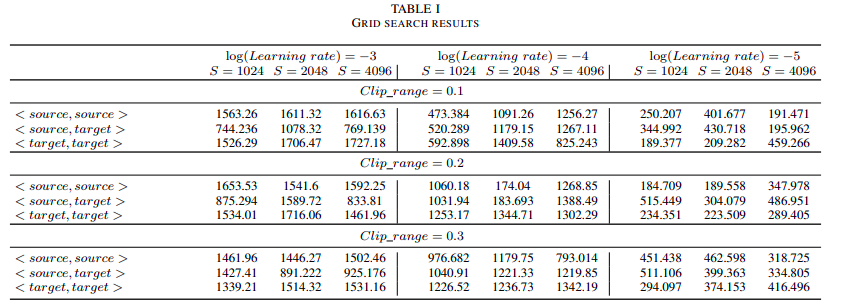
Grid search results showing rewards for different learning rates, steps, and clip ranges. Note the inconsistency between source and target performance.
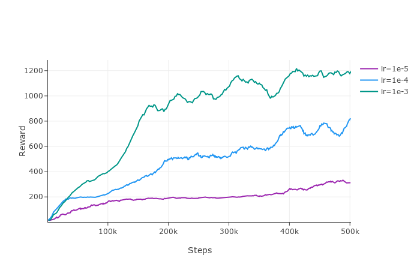
Reward progression during training for different learning rates. Learning rate is the most critical hyperparameter.
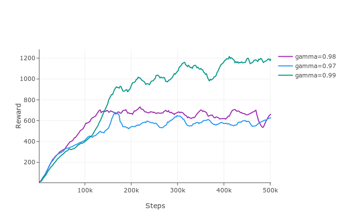
Effect of $\gamma$
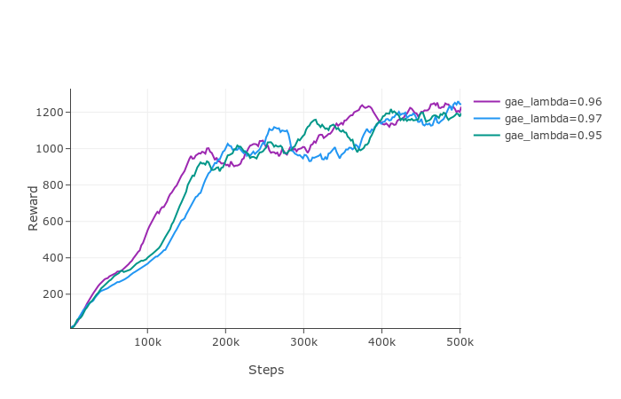
Effect of GAE $\lambda$
The discount factor and GAE lambda are less critical than learning rate. The key observation is that rewards on target are inconsistent with source.
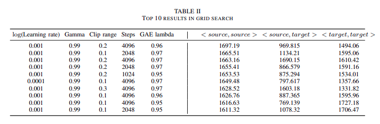
Top 10 configurations from grid search ranked by source performance.
4.2. Optuna Optimization
Optuna combines pruning algorithms with Bayesian optimization to efficiently search the hyperparameter space, discarding unpromising configurations early.
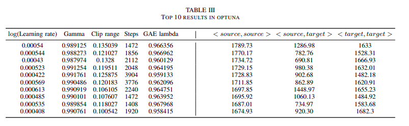
Top 10 Optuna results showing improved source performance (~1790 vs ~1700 from grid search).
5. Domain Randomization
Domain randomization (DR) creates varied simulated environments with randomized properties to train models that generalize across different dynamics. Unlike domain adaptation which requires real data, DR needs little to no real data.
We randomize physical parameters at episode start, sampled from uniform distributions:
- Thigh mass (middle section)
- Leg mass (bottom section)
- Foot mass (base)
Torso mass remains constant. Distribution bounds are tuned via grid search.
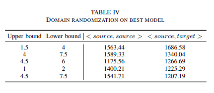
Domain randomization on best Optuna model. Target reward improved significantly (e.g., 1286 to 1686 with bounds [1.5, 4]).
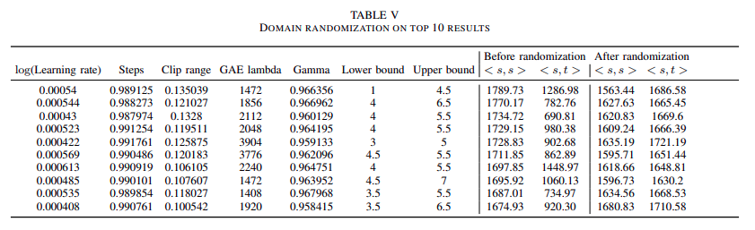
Domain randomization applied to top 10 models. Before vs. after comparison shows consistent improvement in target rewards.
6. Vision-Based Reinforcement Learning
Vision-based RL uses visual observations (pixels) instead of state vectors, requiring extraction of meaningful features from high-dimensional input.
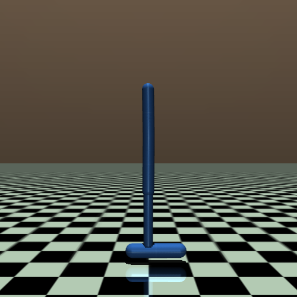
Hopper RGB observation (500x500, 3 channels)
6.1. Preprocessing Pipeline
1. Grayscaling: Color is irrelevant; reduce 3 channels to 1.
2. Resizing: Smaller images improve efficiency while preserving features.
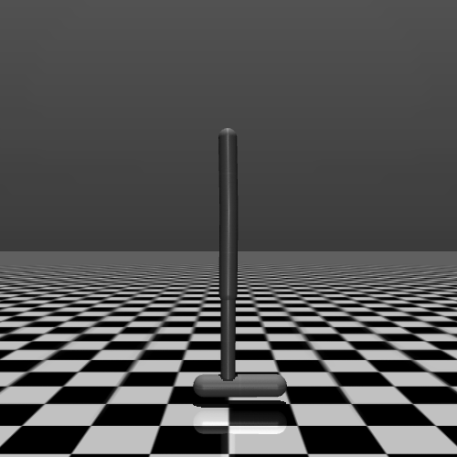
Grayscale
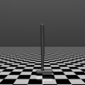
Resized (120x120)
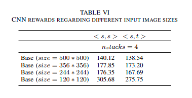
Effect of image size. Smaller images (120x120) outperform larger ones.
3. Frame Stacking: Stack consecutive frames for temporal context.
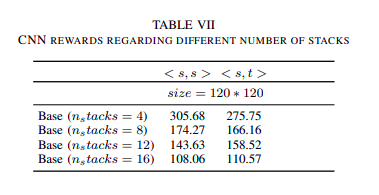
Effect of frame stack size. 4 frames performs best.
4. Feature Extraction: Remove background noise, isolate the hopper.
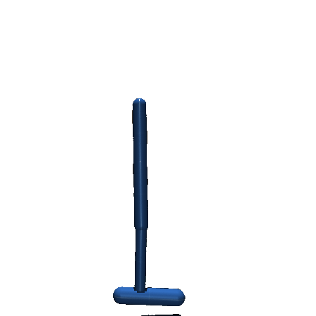
Supervised feature extraction using thresholds
6.2. Transfer Learning with MobileNetV2
MobileNetV2 uses inverted residual blocks for efficient feature extraction without supervision.
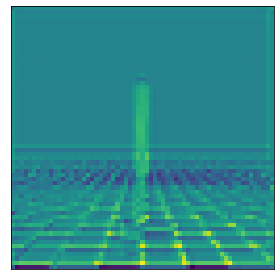
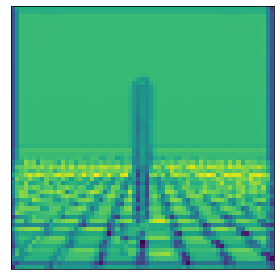
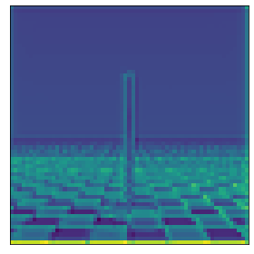
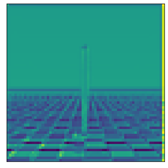
Features from MobileNetV2 intermediate layers
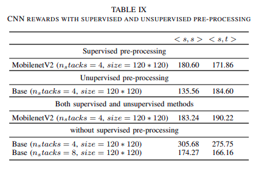
Comparison of feature extraction methods.
7. Results
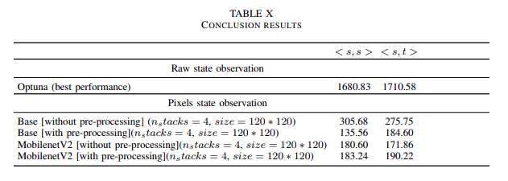
Final comparison of all methods with domain randomization.
Key findings:
- Raw state observation with MLP achieves best performance (~1700 reward)
- Domain randomization effectively bridges the sim-to-real gap
- Vision-based approaches achieve ~300 reward without preprocessing
- RL hyperparameters are more sensitive than in supervised learning
8. Conclusion
Domain randomization is an effective technique for sim-to-real transfer. By randomizing physical parameters during training, policies become robust to modeling errors and transfer better to real systems without requiring real-world data.
The experiments highlighted that hyperparameter sensitivity in RL is higher than supervised learning because each training run generates different data. While vision-based RL shows promise, raw state observations remain superior when available.
Links
Back to Projects GitHub Repository target="_blank" class="github-pill">Report (PDF)